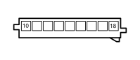

H090D SWITCH CONTROL PANEL (DASHBOARD)
- Path
- Electrical equipment > 3 CONNECTORS > H MANUAL ELECTRIC CONTROLS > H090 SWITCH CONTROL PANEL > H090D SWITCH CONTROL PANEL (DASHBOARD)
- Kind
- connector pinout (pin -> wire colour -> other end)
- Applies to
- all engines; all production periods
- Interactive page
- https://sloeber94.github.io/elrnDB-fDct/en/#/244003087
Applies to: all engines; all production periods

Wiring | Colour |
|---|---|
- |
Pin | Cable | Destination | |||
|---|---|---|---|---|---|
Sec.. | Colour | Node | Connect. | Pin | |
10 | 0,5 | BN (white with black stripe) | 9 | ||
11 | 0,5 | SN (pink with black stripe) | 3 | ||
12 | 0,5 | NZ (black with violet stripe) | 4 | ||
13 | 0,5 | VN (green with black stripe) | 8 | ||
15 | 0,35 | GV (yellow with green stripe) | 11 | ||
16 | 0,35 | HV (grey with green stripe) | 2 | ||
17 | 0,5 | H (grey) | 4 | ||
18 | 0,5 | LN (blue with black stripe) | 6 | ||
Topics linked from this page (6)
- 20 DASHBOARD
- D026 DASHBOARD/RIGHT REAR COUPLING
- D042 DASHBOARD/COURTESY LIGHTS COUPLING
- D097B SHORT CIRCUITING COUPLING (DASHBOARD)
- E050D INSTRUMENT PANEL (DASHBOARD)
- H005B STEERING COLUMN SWITCH UNIT (DASHBOARD)